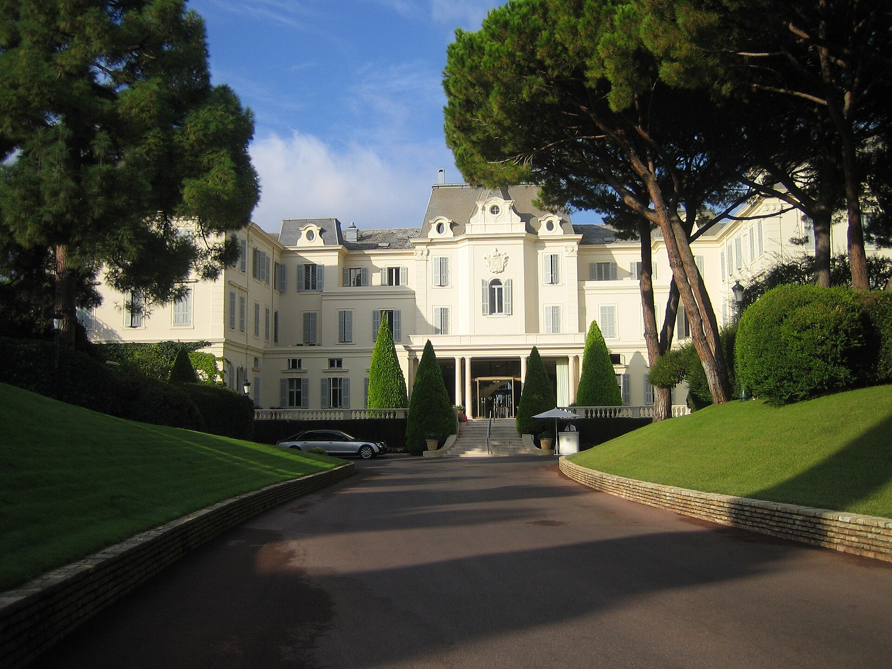

PATRI REALTY · PRÉVIA EDITORIAL · APURAÇÃO 22/10/2026 · NÃO PUBLICADO EM PRODUÇÃO
Hôtel du Cap-Eden-Roc: três Chaves na Riviera Francesa
Em Antibes, o Hôtel du Cap-Eden-Roc integra a seleção máxima de Chaves Michelin. Conheça o perfil e a importância de conferir o calendário sazonal.

Um endereço em que o terreno importa
O Michelin destaca os jardins, a implantação junto ao mar e a piscina escavada na rocha entre os elementos do endereço. A ficha também apresenta opções de acomodação e serviços que compõem a experiência da propriedade. Usamos esses elementos para contextualizar o perfil, sem atribuir uma experiência pessoal à redação. [1]
Nossa leitura editorial é que, em uma hospedagem desse tipo, o terreno e o tempo de permanência participam da decisão. Se a viagem será intensa em deslocamentos, avalie quanto da proposta do hotel você pretende de fato aproveitar.
O calendário vem antes do orçamento
O site oficial informa funcionamento sazonal e, na consulta de 22 de outubro de 2026, anuncia a temporada seguinte entre 18 de abril e 17 de outubro de 2027. Trate essas datas como calendário anunciado, sujeito à confirmação pelo hotel; não como prova de reserva disponível. [2]
Antes de comprar passagens, confirme a abertura para o período desejado e as condições da categoria cotada. Pergunte quais instalações e serviços estarão operando e o que depende de contratação específica ou de condições locais.
Compare o uso da propriedade, não apenas a foto
Como roteiro de escolha, recomendamos perguntar sobre posição da acomodação, circulação até os espaços de interesse, acessibilidade e necessidades da família. Não transfira a configuração de uma villa para um quarto ou uma suíte apenas porque todos estão no mesmo endereço.
Também vale detalhar refeições, transporte e eventuais serviços extras no orçamento total. A distinção Michelin ajuda a situar a proposta, mas não informa sozinha a conta final nem as condições de cancelamento.
O que esta seleção afirma
O hotel aparece nesta série por estar na faixa máxima de Chaves e representar uma proposta de hospitalidade costeira distinta dos outros dois endereços escolhidos. Isso não constitui um ranking universal de melhores hotéis.
A fotografia da fachada é de arquivo, de 2011. Ela identifica a propriedade e não confirma a configuração atual de serviços. Não publicamos número de quartos: as fontes consultadas usam contagens diferentes, sem base suficiente para harmonizá-las nesta pauta.
Perguntas frequentes
O Hôtel du Cap-Eden-Roc abre o ano inteiro?
O site oficial apresenta operação sazonal. Consulte o calendário atualizado antes de organizar a viagem.
Qual é a distinção Michelin?
Três Chaves, conforme a ficha consultada em 22 de outubro de 2026.
Há disponibilidade nas datas anunciadas?
O anúncio de uma temporada não comprova disponibilidade de uma categoria. Apenas a cotação e a confirmação do hotel resolvem essa questão.
Verbetes
- Operação sazonal
- Funcionamento concentrado em períodos do ano; serviços e datas devem ser confirmados.
- Categoria de villa
- Modalidade de acomodação cuja configuração e condições não se presumem iguais às de quartos e suítes.
- Calendário anunciado
- Período de funcionamento divulgado pelo operador; não equivale a uma reserva confirmada.
Fontes consultadas
Continue a leitura
- Guia Michelin: seis endereços para uma viagem de alto padrão
- Cheval Blanc Paris: três Chaves Michelin junto ao Sena
- Passalacqua: três Chaves Michelin no Lago de Como
Kit de publicação
- Título SEO
- Hôtel du Cap-Eden-Roc: três Chaves na Riviera
- Meta description
- Em Antibes, o Hôtel du Cap-Eden-Roc integra a seleção máxima de Chaves Michelin. Conheça o perfil e a importância de conferir o calendário sazonal.
- Legenda social
- Na Riviera Francesa, a escolha também passa pelo calendário. Conheça o Hôtel du Cap-Eden-Roc, com três Chaves Michelin, e os cuidados para planejar uma estadia sazonal em Antibes.